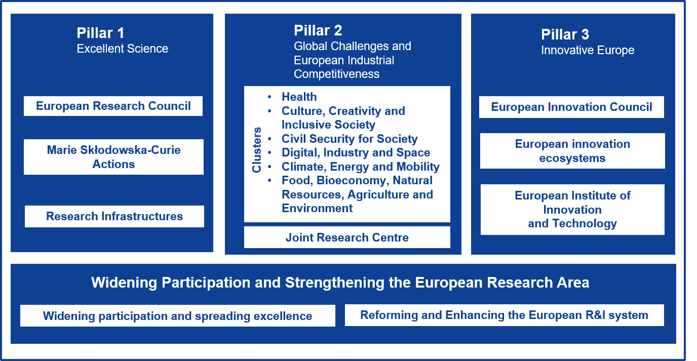

Observation / Question#
Note
Orienté par les source de financement
Financement#
Horizon Europe#
Warning
Prendre le temps d’explorer en profondeur chacun des 3 pilliers et réfléchir à un formattage adapté
Peut-etre réaliser une arborescence comme celle du sommaire ?
S’inscrire a la liste de diffusion ? - lien
Note
Mettre un lien vers le site ou la vidéo est mise en ligne
{kind=link}

Fig. 3 Structure des différents pilliers de Horizon Europe - Source : bayfor.org#
{kind=link}
1 destination : Ecocystèmes d’innovation interconnectés
Note
Ci dessous les différents programmes (crééer un dropdown pour chaque ?)
European Startup and Scaleup Hubs - lien
Note
Deadline : 10 Mars 2026
Objectifs : Définir de nouveaux modèles pour des nouveaux hubs
Objectifs spécifiques : Collaboration entre les meilleurs Hubs (Et ceux widening : mentorat, formation)
Cibles : startups de deep tech (technologies qui doievent rester toujours en pointe et pour cela, elles doivent toujours être en connection avec la recherche)
Ques-ce qui est entendu par Hubs ?
From Lab to Market - lien
Note
Periode d’application : 11/06/2026 - 22/09/2026
Objectifs : Renforcer le rôle des bureaux de transfert de technologie pour porter la connaissance au marché (futur plan européen de valorisation de la Propriété Industrielle)
Objectifs spécifiques : Politique de valorisation de la PI
Plus adapté aux besoins des entreprises
Moins couteuses
Plus standardisés (transparentes)
Groupés en portfolios (accords sur l’ensemble)
Plus attirantes pour les chercheurs
Focus sur les technologies strategiques (STEP)
Adoption de meilleures pratiques
Startup Europe
Note
Explorer les demandes de l’appel d’offre et explorer également les résultats de l’appel d’offrre précédent publié en 2024
Synergies between experimentation spaces and innovation procurement
Note
Pas super important
Involvement of philanthropic organisations in innovation ecocystems
Indicateurs de performances#
Note
Portail général - Regional innovation scoreboard